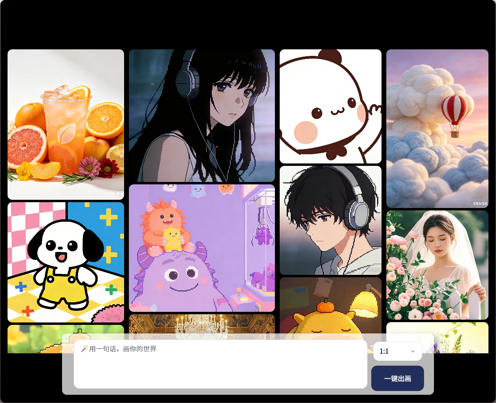
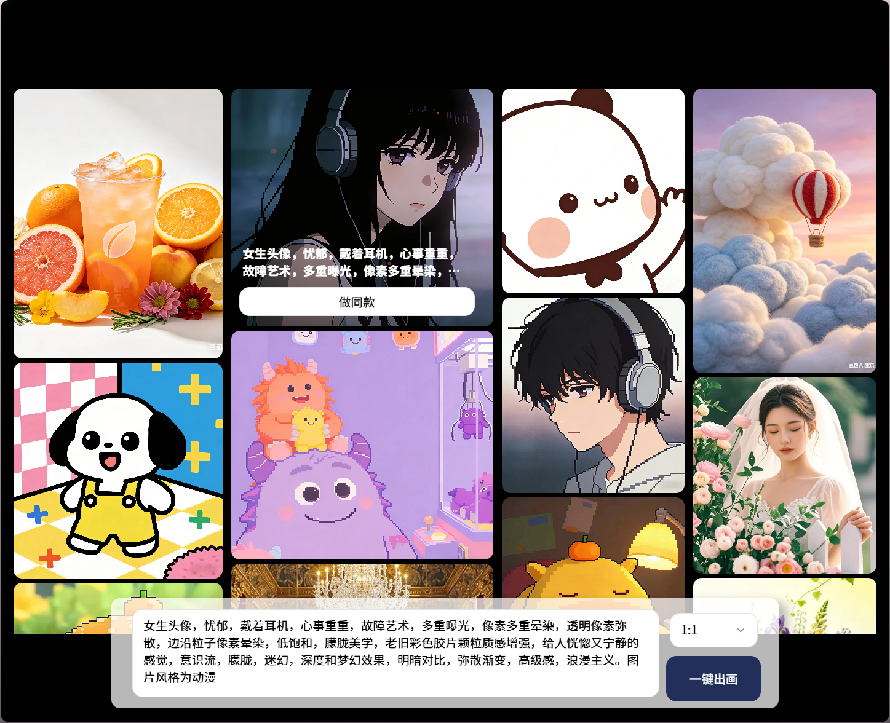
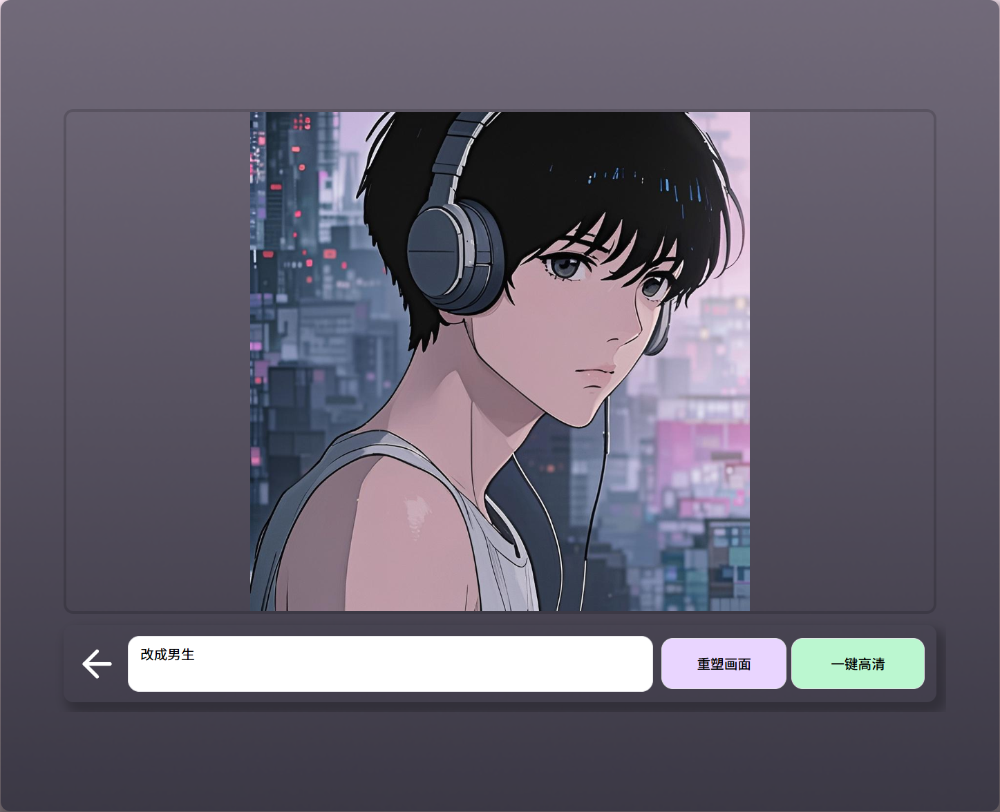
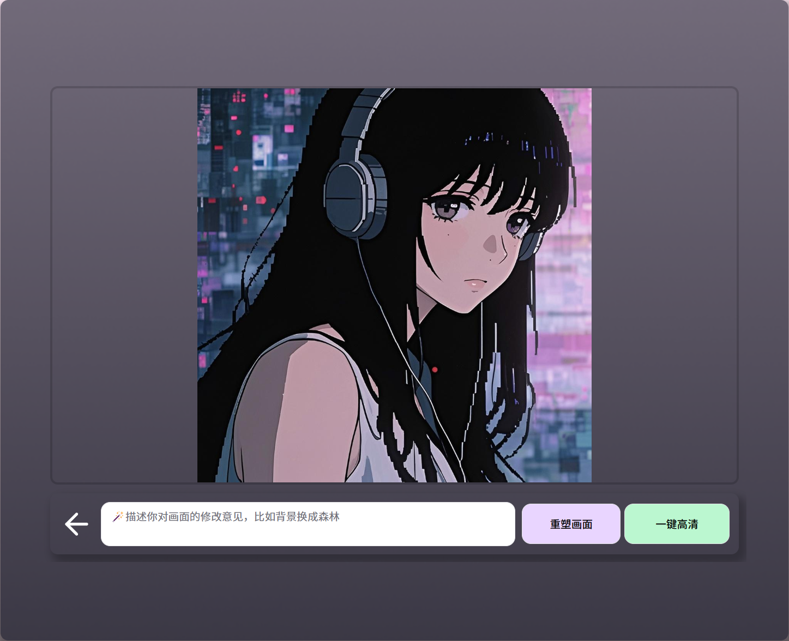
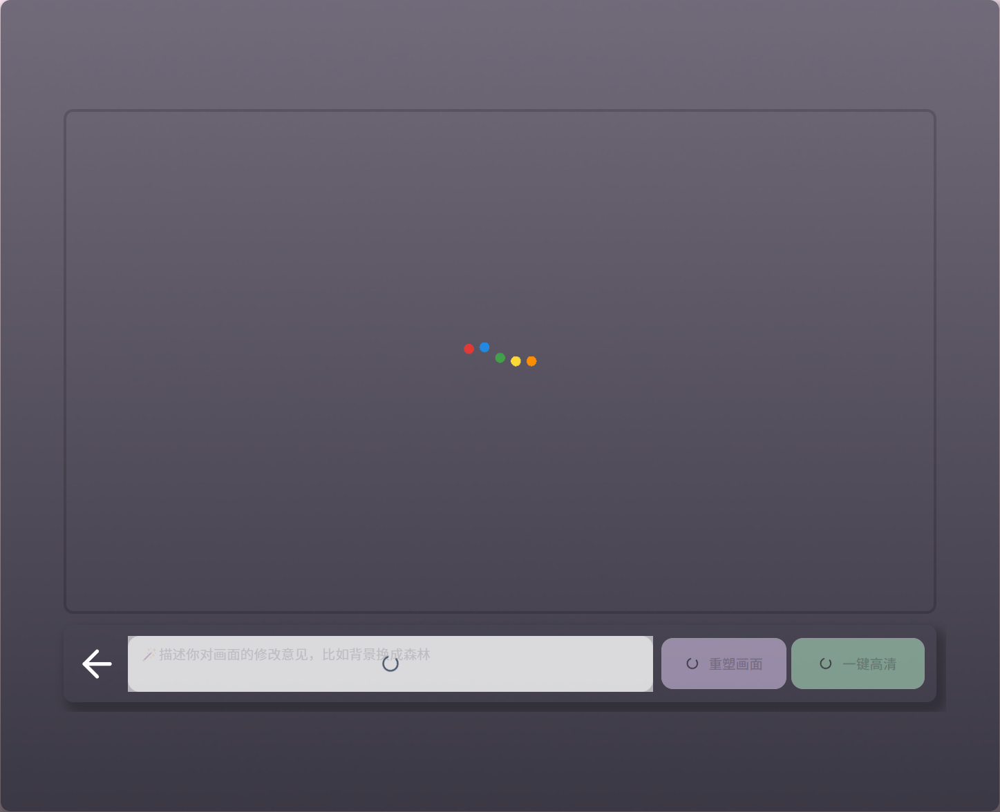

AI图像生成工具 · 文生图+同款复刻+重塑画面 · 3天MVP
基于Coze平台搭建，独立验证生图能力边界后API接入主项目
在做「渐成画迹」习惯App时，需要大量风格统一的激励图片素材。一开始去豆包找图、做同款、改内容，但过程中发现两个很实际的痛点：
痛点一：我的Prompt和生成记录都保存在豆包平台上，相当于创作资产存在别人家里，<隐私和长期可控性都有风险。
痛点二：项目后面肯定还要新增更多图片类型，每次去豆包重新调风格很麻烦，<没法快速复用同一风格生成系列图。
所以决定自建一个平台：一是能自己保存和管理Prompt；二是能在这个平台直接生图，记录不会被外界存走。同时在Coze应用商店里也看到不少类似的生图产物，说明这个需求是存在的。
功能上没有想得太复杂，核心就是文生图 + 同款复刻 + 重塑画面。3天内在Coze上完成MVP搭建并上线。
视频：鼠标悬停触发做同款 → 自动填充Prompt → 一键出图 → 输入修改指令 → 重塑画面 → 一键高清
输入描述，选择画幅比例（1:1 / 2:3 / 4:3 / 9:16 / 16:9），点击一键出图。我项目本身只用1:1，但考虑到通用性，通过Coze选择器节点做了五档切换，<用最小成本预留扩展性。

图1：首页瀑布流 + 底部输入框 + 画幅选择 + 一键出图按钮
这个功能是最关键的——里面的图片和Prompt都是我做习惯App时真实验证过的，比如像素风头像、拼豆图案这些。用户点"做同款"，本质上是在复用我验证过的有效Prompt，<保证风格一致性，解决系列图生产效率问题。

图2：鼠标悬停图片时显示Prompt文本 + "做同款"按钮
基于原图+修改指令的迭代生成，满足"同一风格下的变体"需求。比如输入"改成男生"，在保持背景、风格、构图不变的情况下替换主体。这也是小红书上"求Prompt改图"的高频场景。

图3-4：输入"改成男生" → 重塑画面 → 保持风格一致的主体替换
看到Coze工作流里本身就可以添加图像增强节点，所以尝试加进去了。能让输出图片的清晰度提升一档，<用于解决品质底线。

图5：生成完成后的高清结果图展示
UI上刻意做了几个细节，都是围绕信息密度控制和操作反馈：
悬停显隐策略：做同款按钮和对应的Prompt不会一直显示——只有用户鼠标经过那张图的时候才会出现。这样界面不会堆满文字和按钮，保持干净。
图片悬停放大：已有的图片在鼠标悬停时会放大一点，给足动态感，让用户感知到这是可交互的。
按钮暗度反馈：底部三个按钮（重塑、高清等）悬停时会变暗几度，给明确的反馈——这些微交互都是零代码成本但能让体验更精致。
人机协作范式：以Coze节点化工作流为核心开发环境，践行「人定产品逻辑与验收标准，AI负责节点配置与Prompt调优」。
两阶段架构策略：

图6：Coze应用真实loading状态（彩色圆点动画），证明是上线运营的真实产品
核心成果：上线后外部数据是0，但我并不觉得失败——<它首先是一个服务我自己的工具，我的习惯App素材问题确实被解决了。
架构决策验证：重来我还是会做独立网页，因为这是验证假设的最小闭环。直接嵌入习惯App会让两个项目的进度和风险耦合在一起——如果生图效果不达标，主项目也会被拖慢。
如果重来会前置：接口标准化设计。让网页端的同款ID、画幅参数、输出格式直接兼容未来的API调用，减少二期接入时的改造成本。
这个项目不是孤立的小工具，而是卫星工具矩阵的一部分：
• 基于主项目素材需求，独立开发AI生图工具作为能力中台
• 验证「风格模板化」产品假设，采用「独立验证→API接入」策略解耦风险
• 二期将发布Coze API实现habit解锁时自动生成激励素材的自动化闭环
• 两个项目解耦，不会因为生图模块的风险拖慢主项目进度